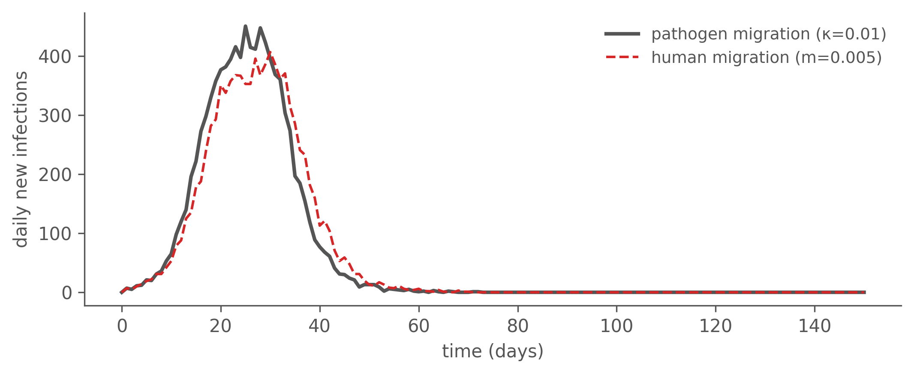
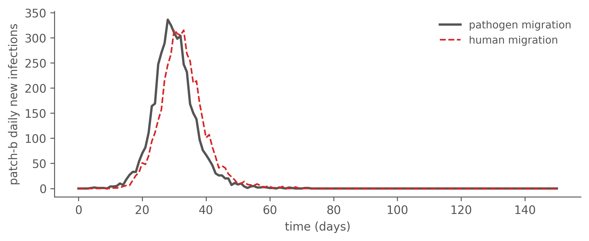
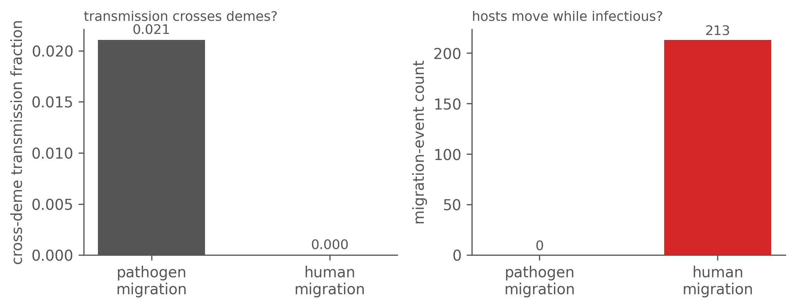
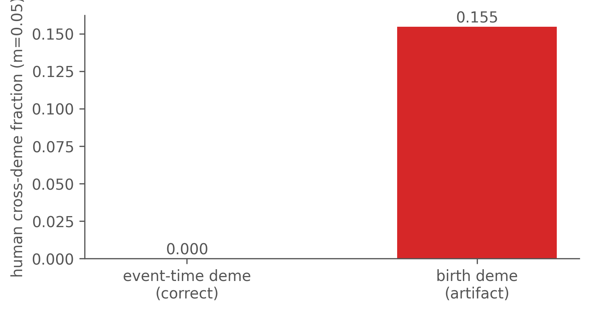

Human vs Pathogen Migration
Two ways to couple patches — one epidemic curve, opposite transmission trees
Draft. Built from
MIGRATION-CHAPTER-HANDOFF.mdagainst camdl0.1.0+ddab05f. Forward-simulation only (simulate → tree → statistic); no migration-aware inference yet (see the closing section).
When a spatial model couples two patches, it can do so in two physically different ways — and the case-count curve cannot tell them apart, while the genealogy can.
- Pathogen migration. Patch a’s susceptibles are infected by patch b’s infectives — a coupling term in the force of infection. The pathogen crosses patches; nobody moves.
- Human migration. Transmission is entirely local; instead, infected hosts physically relocate between patches.
Calibrate both to the same incidence curve and they produce structurally opposite transmission trees. This is the same lesson as the seed-timing chapter — genomic/genealogical data carries information beyond incidence — made spatial: two mechanisms, one epidemic curve, different trees.
Two ways to couple patches
Both models are 2-patch (a, b) SIR, seeded in patch a only (I[a]=10, patch b fully susceptible), so patch b’s epidemic is entirely driven by whatever couples the patches — which makes the coupling mechanism the whole story. The only structural difference is one transition block.
Pathogen migration puts the coupling in a rate — an importation flow into S[p] proportional to the other patch’s infectives, with no host movement:
infection[p in patch] : S[p] --> I[p] @ beta * S[p] * I[p] / N[p]
importation[p in patch, q in patch] : S[p] --> I[p]
@ kappa * S[p] * I[q] / N[q] where p != q
recovery[p in patch] : I[p] --> R[p] @ gamma * I[p]Human migration keeps transmission strictly local and adds a movement transition that relocates infectives between patches:
infection[p in patch] : S[p] --> I[p] @ beta * S[p] * I[p] / N[p]
recovery[p in patch] : I[p] --> R[p] @ gamma * I[p]
migration[p in patch, q in patch] : I[p] --> I[q] @ m * I[p] where p != qThe contrast is exactly where the coupling lives: in the rate (pathogen) versus in a transition that moves people (human).
Same epidemic, matched operating point
We pick a matched operating point — pathogen κ = 0.01, human m = 0.005 — and simulate both (β = 0.5, γ = 0.2, chain-binomial, 150 days). The canonical commands are:
# pathogen (coupling in the rate)
camdl simulate models/pathogen_migration.camdl --backend chain_binomial --dt 1 --seed 7 \
--param beta=0.5 --param gamma=0.2 --param kappa=0.01 \
--event-log pathogen.parquet --output pathogen_traj.tsv
camdl lineage realize pathogen.parquet --identity-seed 7 -o pathogen_ll.tsv
# human (coupling in a movement transition)
camdl simulate models/human_migration.camdl --backend chain_binomial --dt 1 --seed 7 \
--param beta=0.5 --param gamma=0.2 --param m=0.005 \
--event-log human.parquet --output human_traj.tsv
camdl lineage realize human.parquet --identity-seed 7 -o human_ll.tsvThe two epidemics are closely matched — same attack rate and a comparable peak, close enough that incidence-based inference has little purchase on which mechanism is at work (the curves differ only in a few days of peak timing). Even the import-driven patch b — seeded entirely through the coupling — follows nearly the same schedule under both:

Different trees: the decisive statistic
The genealogy tells the two apart. The key quantity is the cross-deme transmission fraction: of all transmission edges, the fraction where infector and infectee are in different demes, scored by the event-time deme each was in at the moment of transmission.
- Pathogen migration: a b-infective infecting an a-susceptible is a genuine cross-deme transmission edge, so the fraction is > 0.
- Human migration: every transmission is local, so the fraction is exactly 0 — the patch mixing is carried by migration events on branches, which are not transmission edges.
Its mirror is the migration-event count (a host moving while infectious): positive for human migration, zero for pathogen migration.

The same contrast can be drawn directly on a deme-coloured transmission tree: under pathogen migration the deme changes at internal nodes (a cross-deme transmission event), whereas under human migration it changes along branches (a host relocating between transmissions). Rendering that cleanly needs deme annotation on internal branches, not just tips — a planned addition to this draft.
How you attribute deme is a modelling choice
The human cross-deme fraction is exactly zero only if we score each individual by the deme it was in at the moment of transmission. Score it instead by the deme it was born in (its infection event), and a migrant — born in a, moved to b, transmitting locally in b — is mislabelled as an a→b cross-deme edge. The artifact grows with the migration rate:

The point is general: how you attribute deme is itself a modelling decision, and getting it wrong manufactures a coupling signal that the data do not contain.
Why this matters for inference
Incidence-only inference is blind to the difference between these two mechanisms — both fits would land on the same likelihood. The genealogy is not: the cross-deme transmission fraction and the migration-event count are information that lives entirely in the tree. A migration-aware structured likelihood p(tree | parameters) would exploit exactly this signal to identify which coupling generated an outbreak, and at what strength.
That likelihood is designed-for but not yet built — this chapter is forward (simulate → tree → statistic), and the inference is motivation, not a runnable result. What is concrete today: the matched incidence curves, the cross-deme/migration-event contrast, the deme-coloured trees, and the birth-versus-event-time attribution that shows how a modelling choice can fabricate a signal. The seed-timing chapter broke a temporal degeneracy with genealogical information; this is its spatial sibling.